Home
Tours
About us
test
templateOG
Contact
North Island
Pacific Coast Highway
Ackland- Cormandel- Napier
7 Days - 1104km
Middle Earth
Hobbits and Waimtomo Caves
7 Days - 1153
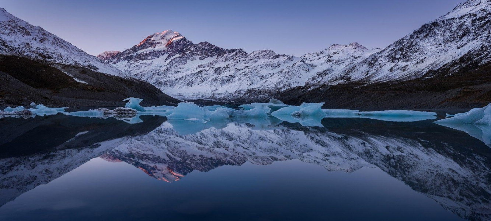
Winter
Underground caves and snowy lakes
7 Days - 807kmm
South Islands
Route 72
Christchurch-Geraldine-Akaroa
6 Days - 475km
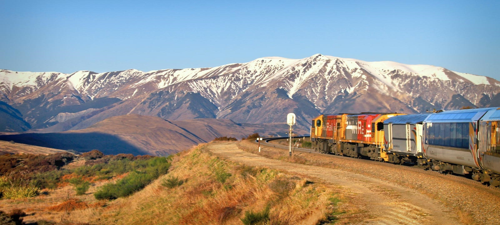
Trans Alpine
Christchurch-Queenstown-West Coast
6 Day - 768km
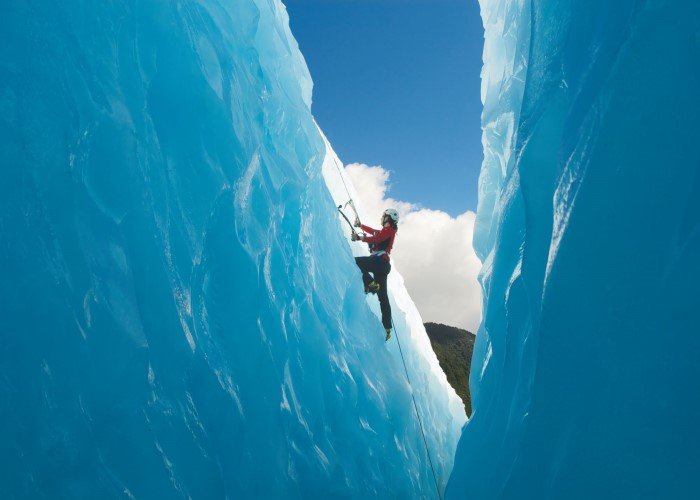
Glacier
West Coast
6 Days - 1365km
Both Island
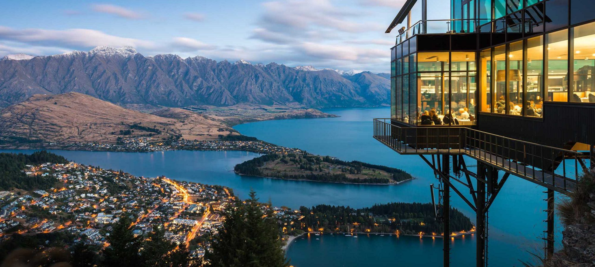
Queenstown to auckland-east coast
Best of the East Coast
14 Days - 2265km
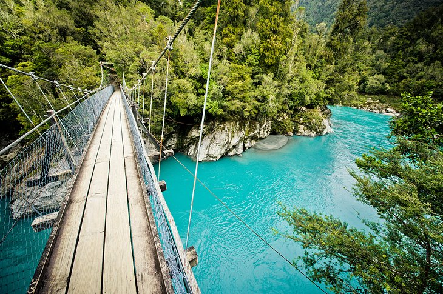
Auckland-Christchurch-West Coast
Rugged wilderness and secluded beaches
14 Days - 3189km
User Rating
4.1 average based on 254 reviews.
5 star
150
4 star
63
3 star
15
2 star
6
1 star
20
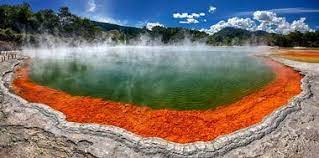
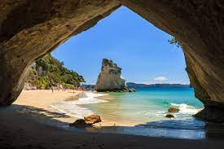
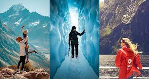
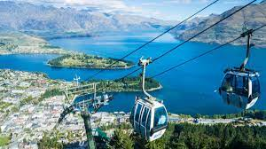
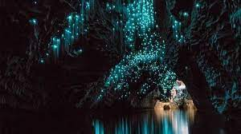
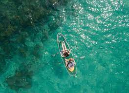
Back to To